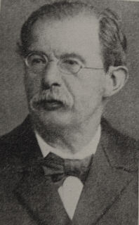

|  |
Recklinghausen's disease (neurofibromatosis) =
Inheritable disease characterized by café au lait spots combined
with multiple peripheral nerve tumours and a variety of others dysplastic
abnormalities of the skin, nervous system, bones, and endocrine organs.
Biography:
Friedrich Daniel von Recklinghausen first studied medicine in
Bonn from 1852 to 1855, then in Würzburg and Berlin, where he received
his medical doctorate in 1855, aged 22 years. He subsequently spent three
semesters studying pathological anatomy under Rudolf Virchow, before he
embarked on a journey to Vienna, Rome, and Paris. His exceptional gifts
were soon recognized, and he subsequently spent the years 1858-1864 as
assistant in the institute for pathological anatomy in Berlin, before he
was appointed professor ordinarius of pathological anatomy in Königsberg
in 1865. His inaugural thesis, written in Latin, concerned theories of
pyaemia
He was then professor at Würzburg from 1866 to 1872 and, finally, from 1872 to 1906 in Strassburg. Here he became rector of the university in 1877 and remained active as a researcher and teacher until shortly before his death in 1910.
von Recklinghausen wrote one of the early descriptions of haemochromatosis and introduced this term into the medical literature. In 1862, while still Virchow’s assistant, he published two important papers, one showing that connective tissue contained spaces which were drained by lymphatics and in which cells were present. He showed some of these cells had amoeboid movements and identified them as leukocytes. He established the method of using silver to stain the lines of junction of cells and his work led to Julius Friedrich Cohnheim’s (1839-1884) studies on leukocyte migration and inflammation. Cohnheim was a young assistant in the laboratory at the time. von Recklinghausen wrote both in German and Latin.
Recklinghausen was widely known for his postgraduate teaching in the dissection room and the laboratory, attracting students from all over the world. Many of them later had great success and achieved high academic status. Still one of Recklinghausen's students in his memories said that his teacher had little contact with his candidates and rarely spoke to them.
Whilst in Würzburg, Recklinghausen demonstrated for the first time the relationship between metastatic foci or inflammation and bacterial infiltrates in blood vessels. Whilst in Strassburg, he helped recruit many of the famous names to the university, such as Wilhelm von Waldeyer-Hartz (1836-1921), and he undertook a number of investigations on the heart and circulation, and published an authoritative book on the subject. In 1881, as a tribute to Rudolf Virchow’s 25 year jubilee he wrote his classical article on neurofibromatosis.
Recklinghausen was the epitome of the traditional histopathologist of his time and was resistant to new changes such as the introduction of the microtome or the results of the new science of bacteriology, even though he made some of the outstanding contributions in the early understanding of inflammation and bacterial spread. He trained a host of people who became leaders in Germany including Karl Friedländer (1847-1887), Friedrich Wilhelm Zahn (1845-1904), Karl Albert Ludwig Aschoff (1866-1942) and many others.
Recklinghausen was quite a colourful personality and pleasant colleague. He opposed Robert Koch’s concept that the tubercle bacillus was the cause of tuberculosis. He would argue that to say that tuberculous lesions contained Koch’s bacillus and therefore the bacillus was the cause of tuberculosis was like saying that the pyramid-like piles of horse manure (a frequent sight in Strassburg streets before the advent of the motor car) were du to sparrows which perched on top of them.
Friedrich Daniel von Recklinghausen lived an uneventful life and died in 1910, aged 77.
Bibliography: